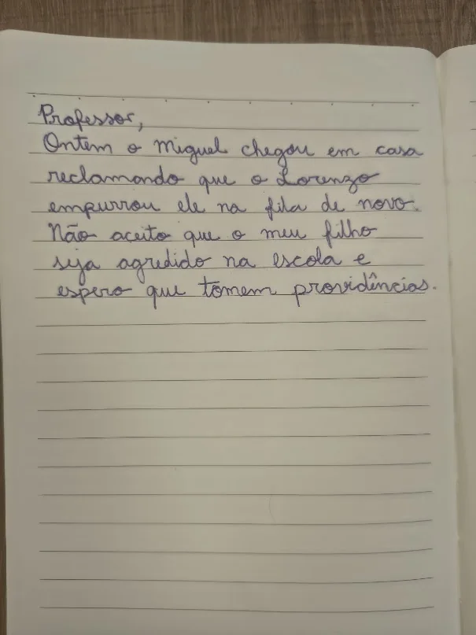
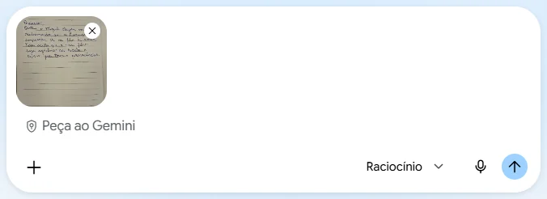
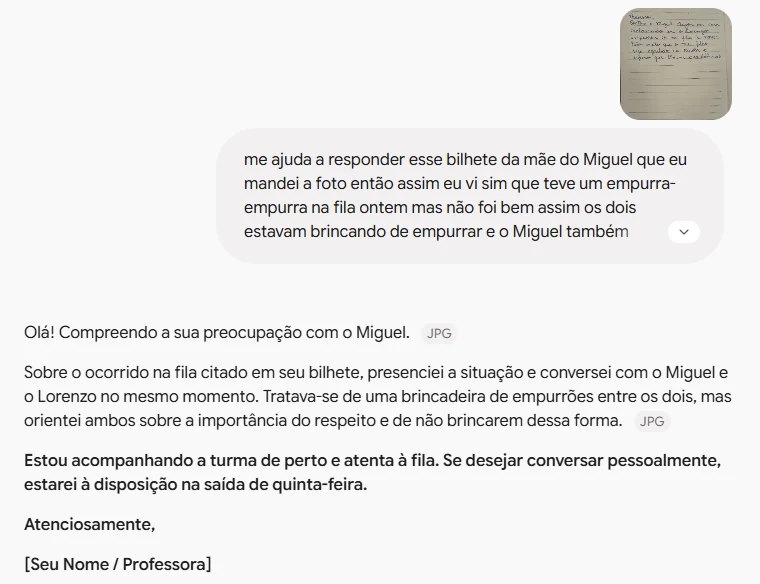
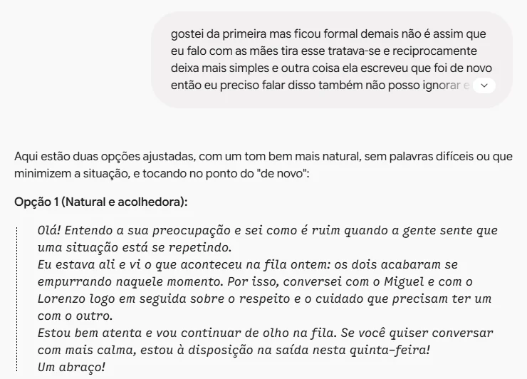
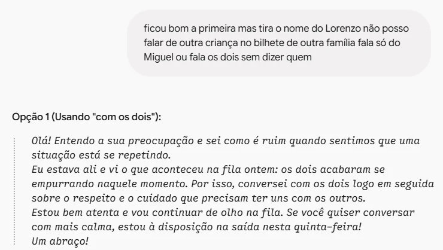

Responder um bilhete
Tire uma foto do bilhete da agenda, fale pelo microfone o que você quer dizer e peça ao Gemini uma resposta no tom certo

Olá! Entendo a sua preocupação e sei como é ruim quando sentimos que uma situação está se repetindo.
Eu estava ali e vi o que aconteceu na fila ontem. Conversei com os dois logo em seguida sobre o respeito e o cuidado que precisam ter uns com os outros.
Estou bem atenta e vou continuar de olho na fila. Se quiser conversar com mais calma, estou à disposição na saída nesta quinta-feira!
Leia o bilhete com calma
- Bilhete assim mexe com a gente. Antes de responder, leia de novo e veja o que a família está pedindo.
- Repare nas palavras: "de novo" (já aconteceu antes), "agredido" (para a mãe foi sério) e "providências" (ela quer saber o que você fez).
- A resposta precisa falar dessas três coisas, sem acusar nem se defender.

Anexe a foto do bilhete
- Tire uma foto da agenda com o celular. No Gemini, toque no + e em Enviar arquivos, ou use a câmera direto no app.
- O Gemini lê a letra de mão. Assim você não precisa digitar o bilhete.
- O bilhete tem nome de criança. Use a conta @educa: nela, as conversas não são usadas para treinar a IA.
me ajuda a responder esse bilhete da mãe do Miguel que eu mandei a foto então assim eu vi sim que teve um empurra-empurra na fila ontem mas não foi bem assim os dois estavam brincando de empurrar e o Miguel também empurrou mas eu entendo que ela tá preocupada né é mãe e eu quero que ela saiba que eu tô atenta eu já conversei com os dois na hora e vou ficar de olho na fila e eu queria chamar ela pra conversar pessoalmente se ela quiser pode ser na saída na quinta-feira mas eu não quero parecer que eu tô brigando com ela nem me defendendo demais sabe e tem que caber na agenda
Fale o que você quer dizer
- Toque no microfone e fale como se estivesse contando para uma colega. Não precisa pontuar nem falar bonito.
- Conte o que aconteceu, o que você já fez, o que vai fazer e o que oferece à família.
- Diga também como não quer soar: "não quero parecer que estou brigando". Isso orienta o tom.

Leia o primeiro rascunho
- A fala corrida virou um bilhete organizado, e o "não foi bem assim" sumiu. O rascunho não cita o outro aluno.
- Mas ficou formal demais para a agenda: "tratava-se", "reciprocamente". Não é assim que você fala com as famílias.
- E faltou o principal: a mãe escreveu "de novo", e a resposta não toca nisso. Chamar de "brincadeira" pode soar como pouco caso.

Ajuste falando de novo
- Diga com as suas palavras o que não gostou: "ficou formal demais", "ela escreveu que foi de novo".
- O tom melhorou e o "de novo" apareceu: "sei como é ruim quando a gente sente que uma situação está se repetindo".
- Mas leia com atenção: agora o bilhete diz "conversei com o Miguel e com o Lorenzo". A IA pegou o nome do bilhete e colocou na resposta.

Proteja a outra criança
- Nome de outra criança não vai no bilhete de outra família. A outra família tem o direito de ser ouvida por você, e não pela agenda alheia.
- Peça para tirar e diga o porquê. O Gemini trocou por "os dois" ou "o colega".
A IA não sabe o que pode ou não ir num bilhete escolar. Cada ajuste pode trazer um problema novo: leia a versão final inteira antes de copiar.
Olá! Entendo a sua preocupação e sei como é ruim quando sentimos que uma situação está se repetindo.
Eu estava ali e vi o que aconteceu na fila ontem: os dois acabaram se empurrando naquele momento. Por isso, conversei com os dois logo em seguida sobre o respeito e o cuidado que precisam ter uns com os outros.
Estou bem atenta e vou continuar de olho na fila. Se você quiser conversar com mais calma, estou à disposição na saída nesta quinta-feira!
Um abraço!
Revise antes de copiar
- Confira se é verdade tudo o que está escrito: você estava lá? Pode mesmo na quinta-feira, na saída?
- Prometa só o que dá para cumprir. "Vou continuar de olho na fila" é possível; "isso nunca mais vai acontecer", não.
- Copie na agenda, assine e, se a família diz que se repete, avise a coordenação.
Veja o que mudou
- Interativo: toque em um trecho da fala para ver como ele ficou no bilhete.
- As ideias são todas suas. A IA mudou a ordem, a forma e o tom.
- Falar foi mais rápido que escrever, e você não teve de achar as palavras certas com a cabeça quente.